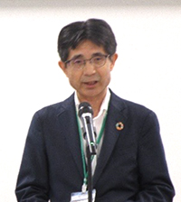
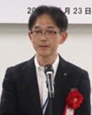
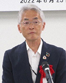
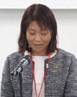
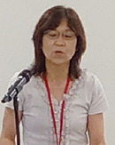
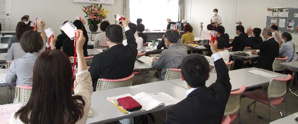

第51回通常総会を開催し、全議案が承認可決されました

あいさつする吉川会長理事
6月23日(木)、埼玉会館（埼玉県さいたま市）にて、第51回通常総会を開催しました。出席者の安全確保をおこないながら実出席で開催し、代議員定数41人中、41人(実出席29人、書面出席12人、委任0人)が出席しました。
吉川尚彦会長理事からの開会のあいさつに続き、ご来賓としてお越しいただいた埼玉県県民生活部消費生活課課長 若松孝治様、埼玉県農業協同組合中央会専務理事 小池和明様、埼玉県地域婦人会連合会 柿沼トミ子様よりごあいさつをいただきました。

埼玉県消費生活課
若松課長

埼玉県農業協同組合中央会
小池専務理事
埼玉県地域婦人会連合会
柿沼会長
その後、吉川会長理事より、2021年度事業活動報告や2022年度事業活動計画、役員補充選任など4つの議案が提案され、議案討議では4人の代議員から発言がありました。高松八重子代議員(生活協同組合コープみらい)は「協同の力で未来へつなごう」、松本令子代議員(生活協同組合パルシステム埼玉)は「生活困窮者支援の継続的な取り組みについて」、薬丸優香代議員(生活クラブ生活協同組合)は「食料・農業に関する取り組み・ゲノム編集食品について」、高橋順子代議員(医療生協さいたま)は「安心してくらし続けられる地域社会(埼玉)について」発言しました。

コープみらい
高松代議員

パルシステム埼玉
松本代議員

生活クラブ生協
薬丸代議員
医療生協さいたま
高橋代議員

全議案、承認可決されました
| 第1号議案 | 2021年度事業活動報告、決算報告、剰余金処分案決定の件 |
|---|---|
| 第2号議案 | 2022年度事業活動計画、予算決定の件 |
| 第3号議案 | 役員補充選任の件 |
| 第4号議案 | 役員報酬額決定の件 |